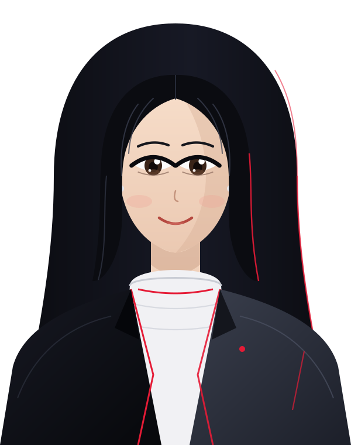
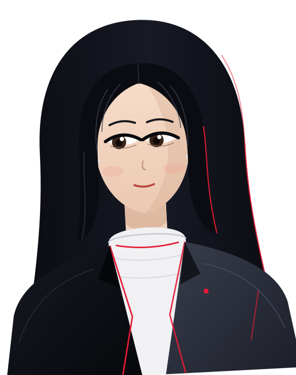

Data Science, Analytics & Developer
BSIT student at PUP Manila, specializing in Data Science. Looking for data science, analytics and technical internships. Based in Manila, Philippines.

 Eryza Mae Imatong
Eryza Mae ImatongCharacter profile
About
Hello, I am Eryza
BSIT student at PUP Manila, specializing in Data Science, and a DOST-SEI merit scholar.
I'm most interested in data science and analytics: working out what a dataset can honestly say, and how sure we can be about it. I also build software, so I can turn analysis into tools people use.
In Re:Watch I built an explainable taste model; in AURA I trained a face-shape classifier and held it back from launch when it failed my own fairness check. I'm looking for data science, analytics and technical internships.
- Program
- BS Information Technology, Data Science
- University
- Polytechnic University of the Philippines, Manila
- Scholarship
- DOST-SEI merit scholar
- Expected graduation
- 2028
- Featured projects
- 2
- Credentials
- 3
Projects
Selected Work
Two public projects, each built around a real problem.
All projects on GitHub → github.com/eryzaimatong
Experience
Where I Have Been
School, a scholarship, and a few programs that shaped how I work.
-
2024 to 2028 (expected)
BS Information Technology, Data Science
Polytechnic University of the Philippines, Manila
Specializing in Data Science.

-
2024 to present
Merit Scholar
DOST-SEI (Department of Science and Technology)
Merit scholarship from the DOST Science Education Institute, 2024 cohort, supporting my BS degree.

-
Sep to Dec 2026 · in progress
Global Consumer Intelligence (GCI) program
University of Tokyo, Matsuo-Iwasawa Lab (JICA-supported)
Online program: attend sessions, complete homework, join competitions and build a final project.

Leadership
Beyond the Code
Teams and communities I design for, build with, or help lead.
-
Cisco NetConnect · PUP – Manila
Graphic Designer, Creatives Department
Design event recap posts and other graphics for the organization's Facebook page.
Visual designFigma
-
IBITS · Institute of Bachelors in Information Technology Studies
Logistics & Resource Operations Member
Member of the Program and Activities Department, working on logistics and resource operations.
LogisticsEvent planningResource managementIBITS on Facebook
-
Google Developer Groups on Campus · PUP · 2026–27
Strategy and Insights Associate (Strategic Department)
Turning research and data into meaningful insights to guide organizational decisions, strategic planning, and performance evaluation.
Data AnalysisStrategic PlanningResearch
Certification & training
Credentials
-
DataCamp certification · Aug 2026
Associate Data Analyst

-
Cisco Networking Academy course · Aug 2026
Data Analytics Essentials

-
DataCamp career track, 39 hours · Aug 2026
Associate Data Analyst in SQL
Skills
Tech Stack
What I work with across data and software, plus the tools I use to build and collaborate.
Programming
Data science and analytics
Frontend
Backend and databases
Developer tools
AI tools I use
Collaboration
A lit key is used in my projects. Re:Watch uses Java, Spring Boot, PostgreSQL and React; AURA uses Python, scikit-learn, NumPy and FastAPI.
Contact
Let’s talk
I'm looking for data science, analytics and technical internships. If you're hiring, or want to talk about Re:Watch or AURA, email me. Based in Manila, Philippines.
